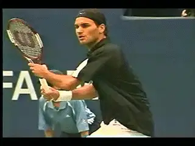
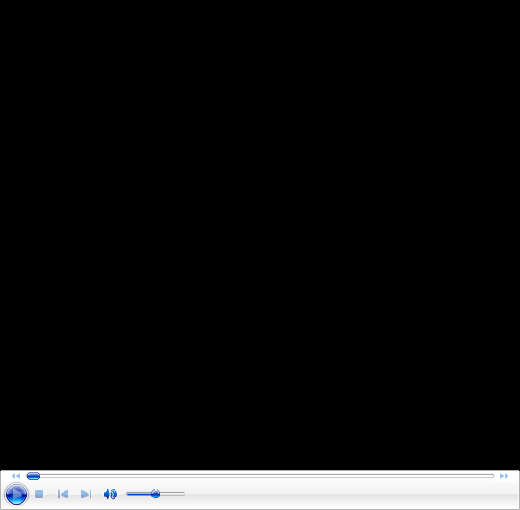
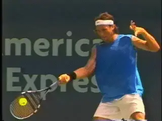
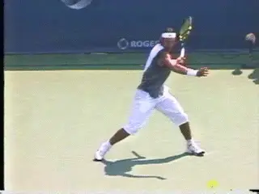
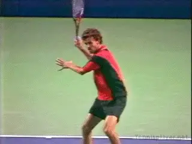
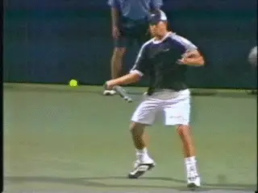
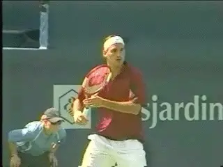
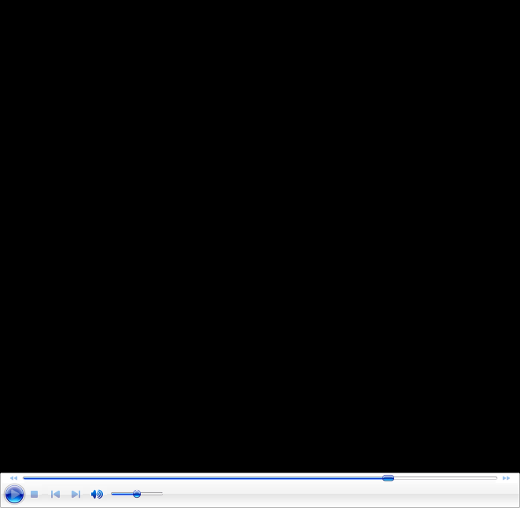

John YandellYour Forehand and the Modern Forehand¶
Your Forehand and the Modern Forehand: A SummaryThe Contact PointShoulder RotationThe Reverse ForehandThe Forward Swing Part 2: Hand and Arm RotationThe Forward Swing Part 1: ExtensionHitting Arm Positions: The Straight Elbow Hitting Arm PositionHitting Arm Positions: The Double Bend Backswing: Part 2Backswing: Part 1 Grip and Contact Height Preparation
Preparation
Over the past 4 years we've used the high speed footage from Advanced Tennis to explore the modern forehand in pro tennis in virtually every aspect. Currently there are over a dozen detailed articles in the Advanced Tennis section on the modern forehand. These cover the commonalities and the differences among the top pro players. (Click Here.)
Last month we started a new series called "Your Forehand and the Modern Forehand." The idea is to apply everything we've learned to your game and see what pro elements are universal and which are a function of primarily of level of play.
Although some readers have occasionally mistaken my intent, in my previous articles I never said that every player should hit the forehand like Roddick, or Nadal, or Federer--not in all respects anyway. I stated repeatedly that my was just to try to understand the pro forehand, a challenging goal to say the least. But now it's time to get specific and see what pro elements you can incorporate to take your game to the next level. In the first article, we started with an analysis of Grip and Contact Height. (Click Here.)
This month we'll continue with Part 2 "Preparation." It's a subject that is widely misunderstood. I think this article is the best analysis of forehand preparation that I've done or seen on the site, or honestly, anywhere else.
So see what you think and let's know by posting a comment in the Forum!

What are the secrets to great preparation and why is it so misundertood?
.
Grip and contact height
Over the past 4 years we've used the high speed footage from Advanced Tennis to explore the modern forehand in pro tennis in virtually every aspect. Currently there are over a dozen detailed articles in the Advanced Tennis section on the modern forehand. These cover the commonalities and the differences among the top pro players. (Click Here.)

What elements in the modern pro forehand really apply to your game?
For me it's been a magical adventure and I have taken the time to go into the detail that I think the complexity of the subject requires. But I also feel that the time is now ripe to summarize what we've learned, and especially, to make it more accessible to everyone on Tennisplayer.
Many subscribers, I know, have mined these articles repeatedly. But I also know from the emails I get that many players aren't aware of everything we have done and of richness and depth of theses archives.
A recurring issue is what applies to whom. Although some readers have mistaken my intent, I never said that every player should hit the forehand like Roddick, or Nadal, or Federer--not in all respects anyway. I stated repeatedly that the main purpose was just to try to understand the pro forehand. But now it's time to spell out how it applies to your game.
So in "Your Forehand and the Modern Forehand," we'll try to synthesis everything we've learned over the last few years, and simplify it as much as possible. There will still be questions, but we'll try to lay them out and suggest what options apply when for what levels. We'll also do it in a new format, using voice over video commentary, which I hope will bring a new immediacy and clarity to the analysis.
In this article we start with the controversial topic of Grips. If you've followed the previous articles you know that there is a huge range of grip varations--probably at least six distinct patterns in the pro game. Should you base your grip on game style, ability level, or on the player you most admire? Or, what about the critical and usually unrecognized factor of Contact Height?
Click on the image and see my analysis!
The Backswing: Part 1
This month we continue with "The Backswing: Part 1." It's a confusing, complex topic. So much so that it's going to take two articles to sort it all out. So here's Part 1. Find out the real purpose of the backswing and see what applies to your game in pro tennis.
AND let us know what you think by posting a comment in the Forum!

The Backswing: Part 2
This month we continue with "The Backswing: Part 2." Amazing that it takes two parts! But when you really start looking at this complex and misunderstood motion frame by frame, it's amazing. No two pros do the same thing, and none of the usual teaching descriptions seem accurate. So what is really happening--and what should you apply, or not, in your own game? That's what this article is all about.
AND let us know what you think by posting a comment in the Forum!
Hitting Arm Positions: The Double Bend
Last month we looked at the most predominant forehand hitting structure, the double bend arm configuration, where the hitting arm is bent at the elbow and at the wrist. This month we look at the rare, more controversial hitting arm structure - the straight elbow hitting arm position - that a select few pro players use.
The Straight Elbow Hitting Arm Position
Last month we looked at the most predominant forehand hitting structure, the double bend arm configuration, where the hitting arm is bent at the elbow and at the wrist. This month we look at the rare, more controversial hitting arm structure - the straight elbow hitting arm position - that a select few pro players use.
The Forward Swing Hand and Arm Extension This month we'll start to look at the forward swing, possibly the most complex and dynamic element in tennis. We'll try to understand what really happens and why there is so much diversity among top players, by breaking the forward swing into two components. This article will focus on Extension, with Rotation coming up next month. Also, check out the classic lesson which adds additional info on these two confusing and critical elements in developing a great forehand of your own.
The Forward Swing Hand and Arm Extension
This month we'll start to look at the forward swing, possibly the most complex and dynamic element in tennis. We'll try to understand what really happens and why there is so much diversity among top players, by breaking the forward swing into two components. This article will focus on Extension, with Rotation coming up next month. Also, check out the classic lesson which adds additional info on these two confusing and critical elements in developing a great forehand of your own.
The Forward Swing Hand and Arm Rotation
This month we'll start to look at the forward swing, possibly the most complex and dynamic element in tennis. We'll try to understand what really happens and why there is so much diversity among top players, by breaking the forward swing into two components.

This month focuses on Hand and Arm Rotation, how the top player create the windshield wiper finish, how to create it yourself, and how it applies to your game.
How should you incorporate hand and arm rotation into your forehand?
The Reverse Forehand
This month we'll look at the Reverse Forehand, a term first developed by Robert Lansdorp to describe a forehand variation in which the racket finishes on the same side that the swing starts, instead of across the body.
Why and how do top players hit it? How can you develop it? And most importantly, how should you incorporate it into your game?
How do top player's hit the reverse, and how applicable is it to your game?

Shoulder Rotation
This month, we'll take a look at another common and controversial technical component: torso rotation. Top players are rotating their shoulders 90 degrees or more in the forward swing on many balls. How does this factor work, when does it happen, and how does it apply to your game?

Shoulder rotation has become extreme in pro tennis, but how does this apply to you?
The Contact Point
This month, we'll take a look at the key moment in the forehand--the contact point. How do you achieve it and how does it relate to your position to the ball--and especially to your hitting arm structure?

Contact is the key moment, but what are the characteristics of great contact and how are they achieved?
A Summary

Is it possible to summarize the modern forehand in one article? You be the judge...
Over the past 4 years we've used the high speed footage from Advanced Tennis to explore the modern forehand in pro tennis in virtually every aspect. Currently there are over a dozen detailed articles in the Advanced Tennis section on the modern forehand. These cover the commonalities and the differences among the top pro players.( Click Here.)
In this new series called "Your Forehand and the Modern Forehand," we've applied everything we've learned to your game and see what pro elements are universal and which are a function of primarily of level of play.
This marks the 12th full article devoted to the beautiful and tremendously dynamic motion we call the forehand. We've covered everything from grip to preparation to hittting arm positions, finishes, wipers and more. Now in this last article, we try to summarize all the components and see what we've learned.


John Yandell is widely acknowledged as one of the leading videographers and students of the modern game of professional tennis. His high speed filming for Advanced Tennis and Tennisplayer have provided new visual resources that have changed the way the game is studied and understood by both players and coaches. He has done personal video analysis for hundreds of high level competitive players, including Justine Henin-Hardenne, Taylor Dent and John McEnroe, among others.
In addition to his role as Editor of Tennisplayer he is the author of the critically acclaimed book Visual Tennis. The John Yandell Tennis School is located in San Francisco, California.